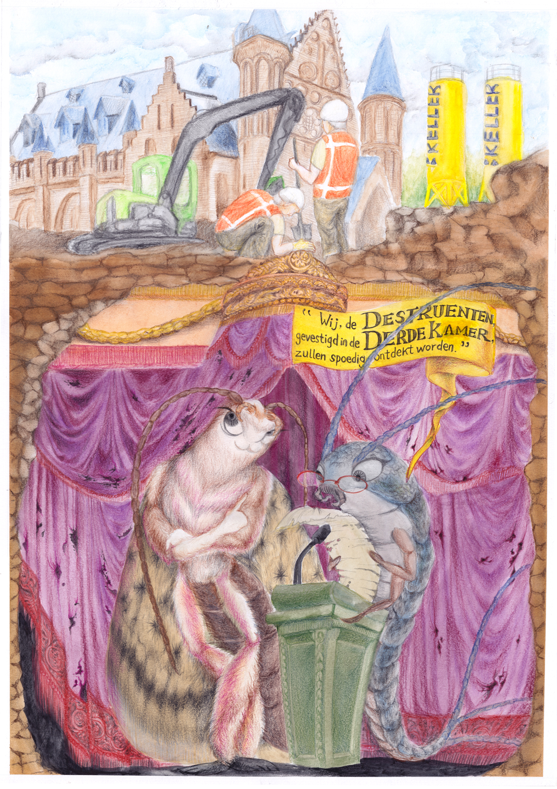

Democracy Inside Out
“Democracy: Inside Out” shows the Binnenhof during the major renovation that is currently taking place.
The archaeological discoveries emerging from the site, along with the restoration efforts, are aimed at preserving 800 years of cultural heritage while making the site future-proof.
Beneath the surface, I portray common household pests—a moth and a silverfish—standing among the decaying remains of archives and history.
They reveal themselves as ‘Destruenten’: decomposers of outdated ideals and imperial legacies, rulers of a secret ‘Third Kammer’.
With this drawing, I use the renovation of one of The Hague’s most symbolic sites to imagine what it means to truly renovate our democratic values—and how both the physical and democratic foundations are exposed, challenged, and rebuilt for the challenges ahead.
Medium
Water color and color pencil on paper,
A2
Edition
Press
Den Haag Central 2025-07-03
Stadstekenaar
